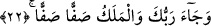

parça hâlinde dökülmedir.
Mânâsı ise şu şekildedir: Yeryüzü birbirini izleyen sarsılışlarla parça parça
döküldüğü, parçalanana kadar bir kısmı diğer kısmına vurulduğu, yerin üzerindeki
dağlar, binalar ve köşkler ardarda gelen zelzele ve depremlerin sonrası dümdüz
olduğunda, yeryüzü peşpeşe gelen sarsıntılarla sarsılıp toz hâline geldiğinde...
Bunlar ise sûra ikinci kez üfürüldüğünde dünyanın başına geleceklerden ibârettir. Yer
bir kırılmayla kırılınca bundan sonra artık parça parça olur.
22. Rabbin(in emri) geldiği ve melekler saf saf dizildiği zaman (her şey ortaya
çıkacaktır).
“Rabbin(in emri) geldiği” Yani Rabbinin kudretini gösteren alâmetler ve kahrına
işâret eden belirtiler zuhûr ettiği zaman... Bu durum dünya sultanlarından birisi bizzat
bir yere geldiğinde heybet ve siyasetinin zuhûr etmesine benzetilmiştir. Çünkü sultanın
geldiği sırada vezirler, seçkin adamlar ve askerlerinin geldiğinde ortaya çıkmayan
şeyler ortaya çıkar.
İmam Ahmed şöyle der: Korkutmak için muzâfın hazfedilmesi ile “Rabbinin emri ve
kazası geldiğinde” demektir.
et-Te’vîlâtü’n-Necmiyye’de ise şöyle geçer: “Rabbin celâlî-kahrî mazharda tecellî
ettiğinde.”
“Melekler de saf saf dizildiği zaman” Yani melekler mahşer meydanına gelip saf
hâlinde veya saf tutmuş olarak dizildiklerinde. Çünkü o gün bütün göklerin melekleri
inip dünyada insanların ve cinlerin namazda saf tutmaları gibi mertebe ve makamlarına
göre insanların ve cinlerin etrafını çevreleyerek ardarda saf tutarlar. Nitekim Allah
Teâlâ: “Melekler onun etrafındadır.” (el-Hâkka, 69/17) buyurmaktadır. Melekler yedi
göğün sayısı kadar yedi saf olurlar.
23. O gün Cehennem getirilir, insan yaptıklarını birer birer hatırlar. Fakat bu
hatırlamanın ona ne faydası var!
“O gün Cehennem getirilir” ifâdesi “Cehennem açık bir şekilde gösterildiği
zaman” (en-Nâziât, 79/36) ifâdesine benzer. Yani Cehennemin getirilmesi, o yerinde
sâbit olduğu halde yaratılmışlar onu görebilsinler diye ortaya çıkarılmasından ibarettir.
Çünkü Cehennemin yerinden ayrılmayacağı mâlumdur.